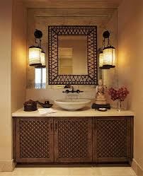
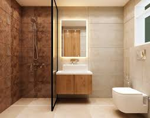

Welcome to Gallery Page
🏠🌞Our gallery showcases rooms that offer the perfect balance of privacy, peace, and convenience — whether you’re a student, working professional, or traveler looking for a comfortable stay.”🏠🌞
🤩✨See Different Viwe Of our Gallery🤩✨

 Balcony
Balcony
The Balcony of room provide a greate view about surroounding environment of room , it decorated by some small plants ,Flower and Show pices 🕊🐤🦅

 Living Room
Living Room
The living room is the heart of every home — a warm and inviting space where comfort meets style. 🛋️✨ It’s designed to be a place where residents can relax, socialize, or simply enjoy some quiet time. In rental homes, the living room often serves as a shared area, bringing people together in a cozy and welcoming environment. 🌿💬

 Bed Room
Bed Room
The bedroom is a personal and peaceful space designed for rest, comfort, and privacy. 🌙✨ It’s where you can relax after a long day, recharge your energy, and truly feel at home. In a rental room setup, the bedroom is carefully arranged to give a cozy and comfortable living experience. 🏡💤
 
washroom And besin
The washroom is designed to provide cleanliness, comfort, and convenience — offering a refreshing start and end to your day. 🚿✨ It’s equipped with essential facilities that maintain hygiene and comfort for every resident. A well-maintained washroom ensures a healthy and pleasant living experience, making daily routines simple and stress-free. 🌿💧
🏡⭐Our Features🏡⭐
- 🛏️ Fully Furnished Rooms — Well-equipped with a comfortable bed, study table, wardrobe, and modern décor for a homely feel.
- 💡 Spacious & Well-Ventilated — Bright rooms with large windows 🪟 that allow natural light and fresh air.
- 🚿 Clean & Hygienic Washrooms — Neatly maintained with modern fittings and 24/7 water supply.
- 4. 🚰 Dedicated Sink Area — Clean, well-designed sink for daily hygiene and convenience.
- ❄️ Fan & Cooling System — Well-ventilated rooms with fans or air conditioning for comfort
- Safe & Secure Environment — 24/7 security or CCTV monitoring for peace of mind.